| ・満開 (H24.04.12) | |||
変な天気でしたし去年と同じくらい、今年の桜もおそいですね。日々いろいろと忙しいですけれど、たまには通学路を少し変えると違った景色が見えて良いものです。 |
|||
|
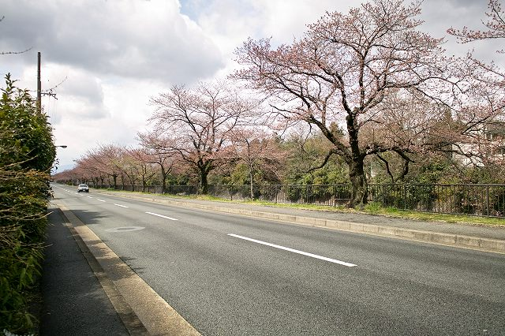
先週の土曜はまだまだ |
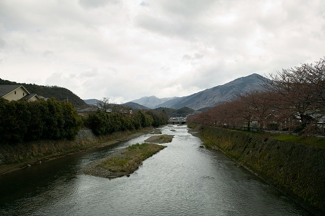
満開（Mouseover） | ||
|
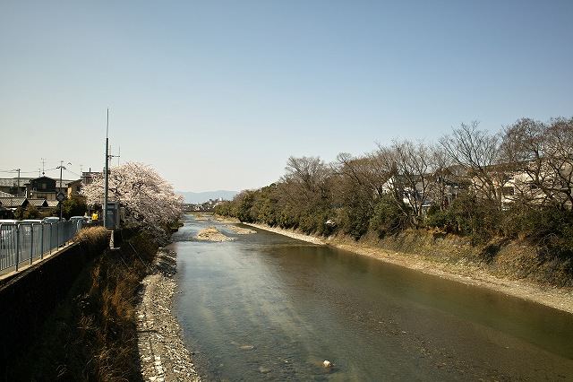
今日がたぶん満開ですね |
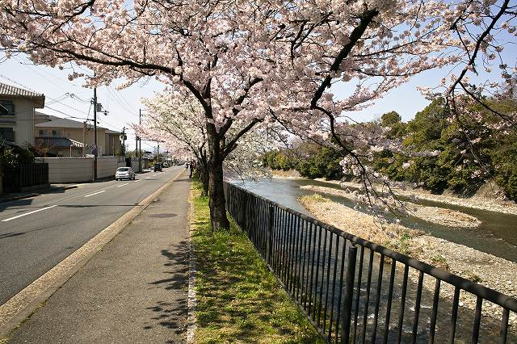
誰か居る！ | ||
|
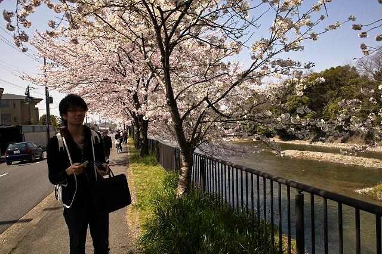
写真が趣味のK城くん |
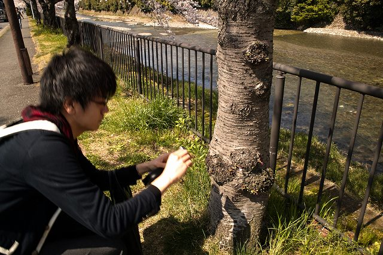
接写してます | ||
|
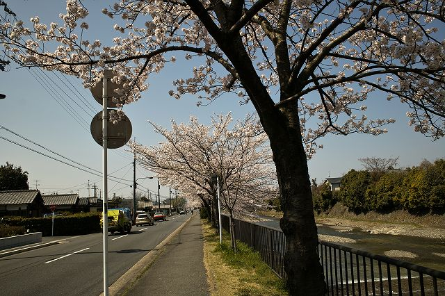
下流も |
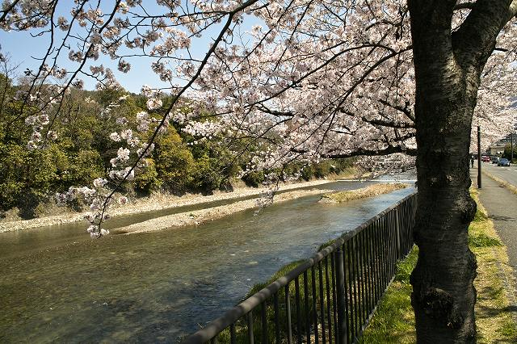
上流も満開 | ||
|
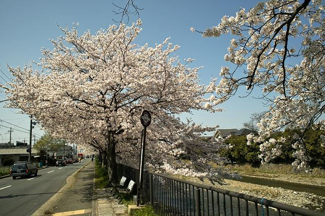
ここからどっか良いところに行けそう |
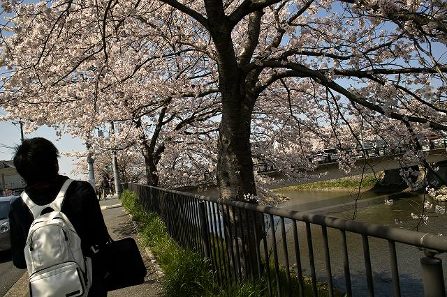
土曜には散るかな | ||
|
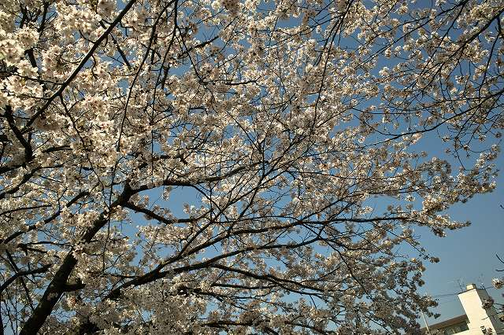
天気良いな |
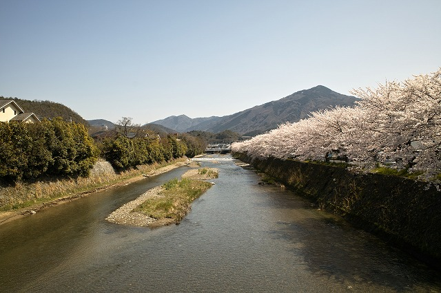
比叡山に映えますね | ||
|
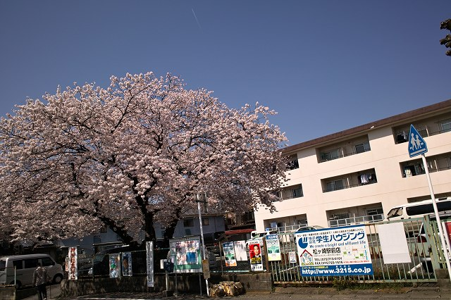
旧M脇邸前も満開 |
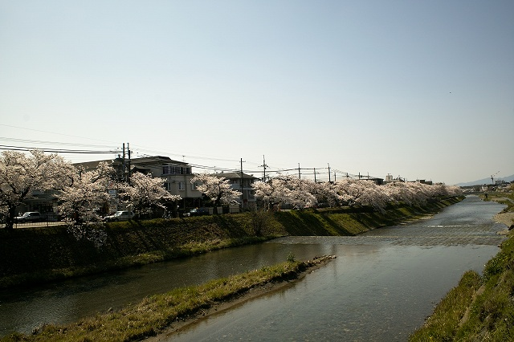
カナートの方まで続きます | ||
|
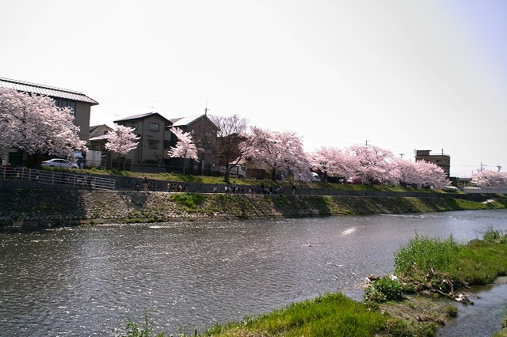
対岸は近所の幼稚園から小さい人 |
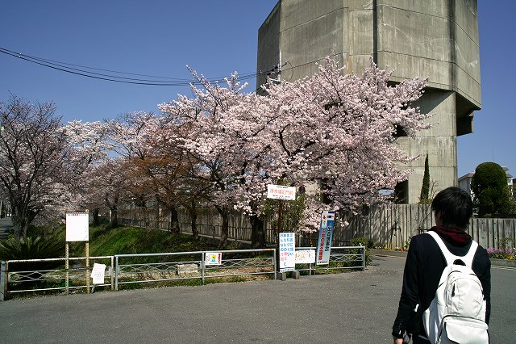
疎水も良い感じ | ||
|
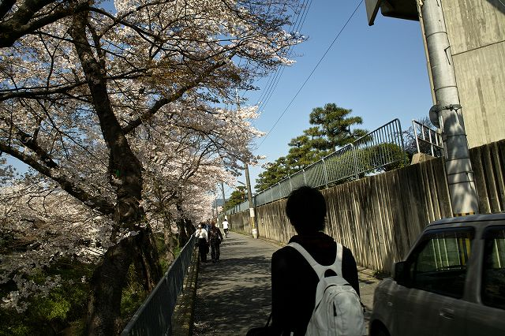
人の出もあります |
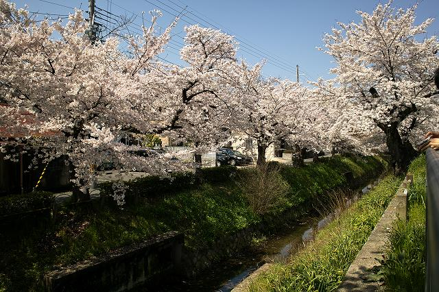
満開 | ||
|
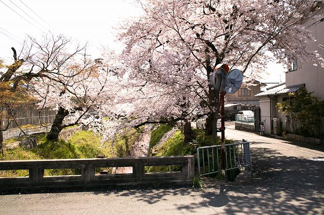
疎水沿いは静かでいいです |
|||